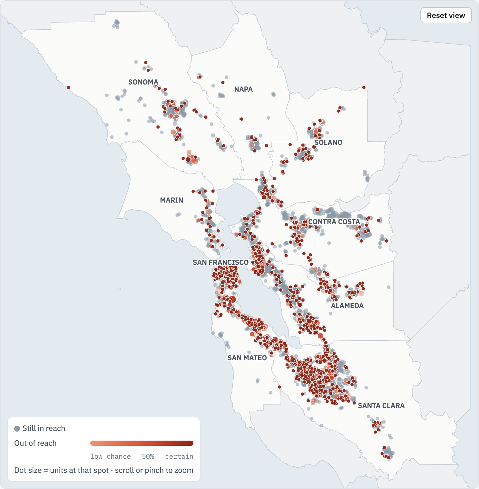
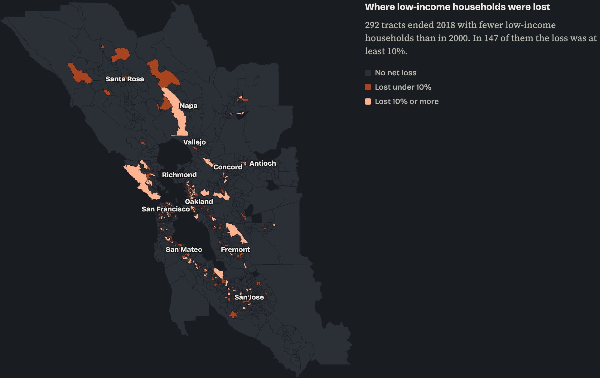
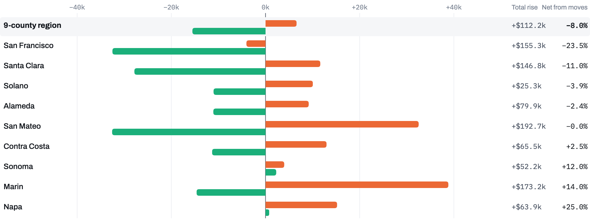
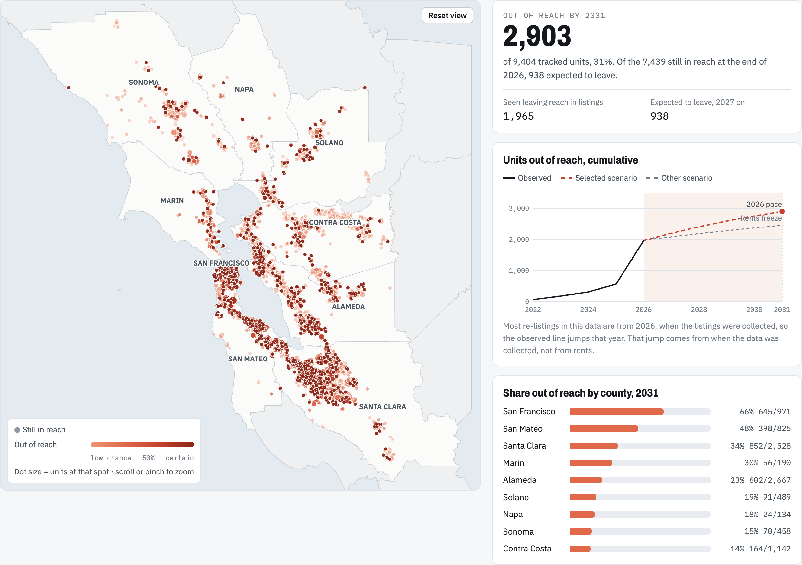

Priced out of reach
How the Bay Area’s boom moves people out through rents.
Advanced Track, San Francisco Bay Area, November 2026.

Rents push people out, not layoffs.
Averages, the standard displacement map and our own models are weakest exactly where the people being pushed out are.
- AI and jobs: who gains
- Movement: who leaves, who arrives
- Displacement risk: where pressure lands
- Who decides: the hearing room
Eleven sources, nine counties
| Source | Scale |
|---|---|
| Zillow listings | 148,005 properties |
| Indeed postings | 45,850 postings |
| Reddit and Glassdoor | 230,520 posts, 95,464 reviews |
| Google Maps places | About 100,000 services |
| IRS, ACS PUMS, LODES | Flows and microdata, 2010 to 2024 |
| CA WARN, HCD limits | 5,392 layoff notices |
| UDP typology, SF Planning | 1,550 tracts, 73,002 comments |
All code runs from raw data to every reported number.
AI-positioned jobs pay double
New hiring widens the gap.
New-hire pay divided by current workers’ pay, same occupation
- Data engineering1.52
- Product and design1.49
- AI and ML roles1.35
- Software engineering1.16
- Frontline service0.92
- Junior professional0.91
- Customer support0.89
- Clerical and admin0.85
Parity, 1.00
Indeed postings against ACS PUMS incumbents. Ratios are upper bounds.
Two channels, two groups outside
An index of 1.0 is parity with a group’s share of workers.
| Group | Share of workers | AI-job index | Capital-income index |
|---|---|---|---|
| White | 36.5% | 0.82 | 1.94 |
| Asian | 29.3% | 1.99 | 0.67 |
| Hispanic | 23.6% | 0.24 | 0.22 |
| Black | 5.1% | 0.36 | 0.24 |
And no measurable bust: layoff notices show no trend over 13 quarters (p = 0.66).
ACS PUMS 2019 to 2023 and 2024; CA EDD WARN. Capital income excludes RSUs and capital gains.
Median pay cannot rent here
Cities where the median posted salary covers the median rent at 30% of income.
Clerical and admin
0 of 25 citiesCustomer support
0 of 22 citiesFrontline service
0 of 66 citiesAI and machine learning
16 of 23 cities
Indeed postings against Zillow rent estimates, by city. Renting the median home takes about $168,000 a year.
A vacancy re-prices the home
The same unit, matched across 23,306 listing pairs.
of San Francisco turnovers moved a unit out of low-income reach. Only 0.7% moved one into reach.
of 2026 turnovers beat the 10% cap, which skips vacant units.
of postings at $60 an hour offer relocation help; 0.1% under $25.
people per tax return among arrivals, against 1.70 among leavers.
Zillow; HCD income limits; Indeed; IRS SOI.
The standard map misses it
Year-2000 census data predicted which tracts lost low-income households.

Test AUC, 388 held-out tracts
- Our census model0.78
- Renter share alone0.66
- UDP vulnerability flag0.52
Coin flip, 0.50
After 2018 the flag ranks rent growth backwards (AUC 0.38).
Urban Displacement Project typology, 1,550 tracts, against Zillow; incomes in 2018 dollars.
Leaving trades rent for burden
Central Valley leavers against similar people who stayed.
Commuting back to the Bay job leaves less than nothing in 35 of 40 job and city cases.
Matched on pre-move traits, ACS PUMS 2022 to 2024. Comparisons, not causal effects.
Averages cancel; hearings rarely refuse
Two reasons the pattern stays out of sight.

Orange: removing leavers. Green: adding arrivals. Thousands of dollars per tax return.
IRS SOI county migration; SF Planning Commission minutes 1998 to 2026 (Sahn, CC BY 4.0).
Every model fails the vulnerable first
Each row is a held-out test.
| Model | Where it fails |
|---|---|
| Tract displacement backtest | 72% of losses caught in renter tracts, 21% in owner tracts |
| Who leaves the Bay | 41% of White leavers flagged, 25% to 28% of others |
| Rent jump at turnover | Under-predicts gentrifying tracts by 2 to 4 points |
| Service deserts | 31% found among the cheapest units, 69% among the priciest |
| Public-comment stance | 40% accuracy on tenant-association speakers |
So the main model reports who it misses.
Will the next rent cross?
Scored at re-listing.
Its last rent was within reach
Affordable at 80% of area median income.
The tenant leaves
Rent control no longer applies.
The settled rent crosses the line
18.9% of 12,011 units; 55% in San Francisco in 2026.
Split by time, checked by hand
2026 was scored once.
- Same-unit turnovers23,306
- Since June 202217,993
- In reach before turnover12,011
- Left reach2,275
- Train: to mid-20254,061
- Tune: late 20251,142
- Test: 20266,808
Reading them changed the label: first asks were often cut back, so we use the settled ask.
The model beats the legal rule
Test AUC on 6,808 re-listings in 2026.
- Our model, gradient boosting0.90
- Logistic, same features0.89
- Distance to line only0.86
- Legal-cap rule, 10% a year0.85
- ZIP rent-trend rule0.84
- UDP map0.46
Coin flip, 0.50
Paired bootstrap, 1,000 draws.
Who the model still misses
Losses caught when flagging the riskiest 20%.
- Low-income tracts0.62 / 0.52
- Exclusive tracts0.79 / 0.64
- Majority-renter tracts0.67 / 0.53
- Majority-owner tracts0.83 / 0.77
- Apartments0.67 / 0.53
- Houses and condos0.88 / 0.85
Ranking is even across groups, but 2026 apartment rents outran the training data.
Separate lists lift low-income recall to 0.76 and cost 5 points regionally.
2026 test set; tract types from the UDP typology.
By 2031, up to 2,903 units
The model, run forward from 1,965 units in 2026.

2,459 units if rents freeze after 2026, 2,903 at the 2026 pace.
Open the atlasAssumes 20% of units change tenants a year.
Mostly headroom arithmetic
Four limits on the model.
Joining the workstreams barely helped
Tract and city-job features add +0.004 AUC across 10 seeds.
Scores are not probabilities
The riskiest tenth was predicted at 62% and observed at 81%.
Outer counties favor the simple rule
The model loses to it in Contra Costa (−0.014) and Sonoma (−0.017).
Asking rents, not signed leases
Dropping implausible jumps keeps the gain (+0.039).
Every number is in units-leaving-reach/FINDINGS.md.
Watch the turnover, not the average.
Acquisition programs
Rank buildings to buy before the next re-listing prices them out.
Tenant organizations
Aim outreach at the units most likely to leave reach this year.
Researchers and agencies
Follow units and people, and report who each model misses.